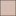

<!doctype html>
<html lang="en">
    <head>
        <meta charset="utf-8">
        <meta http-equiv="X-UA-Compatible" content="IE=edge">
        <meta name="viewport" content="initial-scale=1,user-scalable=no,maximum-scale=1,width=device-width">
        <meta name="mobile-web-app-capable" content="yes">
        <meta name="apple-mobile-web-app-capable" content="yes">
        <link rel="stylesheet" href="css/leaflet.css">
        <link rel="stylesheet" href="css/qgis2web.css"><link rel="stylesheet" href="css/fontawesome-all.min.css">
        <style>
        #map {
            width: 1572px;
            height: 827px;
        }
        </style>
        <title></title>
    </head>
    <body>
        <div id="map">
        </div>
        <script src="js/qgis2web_expressions.js"></script>
        <script src="js/leaflet.js"></script>
        <script src="js/multi-style-layer.js"></script>
        <script src="js/leaflet-svg-shape-markers.min.js"></script>
        <script src="js/leaflet.rotatedMarker.js"></script>
        <script src="js/leaflet.pattern.js"></script>
        <script src="js/leaflet-hash.js"></script>
        <script src="js/Autolinker.min.js"></script>
        <script src="js/rbush.min.js"></script>
        <script src="js/labelgun.min.js"></script>
        <script src="js/labels.js"></script>
        <script src="data/holi_buildings_1.js"></script>
        <script src="data/placestovisit_3.js"></script>
        <script>
        var highlightLayer;
        function highlightFeature(e) {
            highlightLayer = e.target;
            highlightLayer.openPopup();
        }
        var map = L.map('map', {
            zoomControl:true, maxZoom:28, minZoom:1
        }).fitBounds([[27.64521497162832,85.28991495012909],[27.689835804574518,85.38356140981259]]);
        var hash = new L.Hash(map);
        map.attributionControl.setPrefix('<a href="https://github.com/tomchadwin/qgis2web" target="_blank">qgis2web</a> &middot; <a href="https://leafletjs.com" title="A JS library for interactive maps">Leaflet</a> &middot; <a href="https://qgis.org">QGIS</a>');
        var autolinker = new Autolinker({truncate: {length: 30, location: 'smart'}});
        var bounds_group = new L.featureGroup([]);
        function setBounds() {
        }
        map.createPane('pane_OpenStreetMap_0');
        map.getPane('pane_OpenStreetMap_0').style.zIndex = 400;
        var layer_OpenStreetMap_0 = L.tileLayer('https://tile.openstreetmap.org/{z}/{x}/{y}.png', {
            pane: 'pane_OpenStreetMap_0',
            opacity: 1.0,
            attribution: '',
            minZoom: 1,
            maxZoom: 28,
            minNativeZoom: 0,
            maxNativeZoom: 19
        });
        layer_OpenStreetMap_0;
        map.addLayer(layer_OpenStreetMap_0);
        function pop_holi_buildings_1(feature, layer) {
            layer.on({
                mouseout: function(e) {
                    if (typeof layer.closePopup == 'function') {
                        layer.closePopup();
                    } else {
                        layer.eachLayer(function(feature){
                            feature.closePopup()
                        });
                    }
                },
                mouseover: highlightFeature,
            });
            var popupContent = '<table>\
                    <tr>\
                        <td colspan="2">' + (feature.properties['Id'] !== null ? autolinker.link(feature.properties['Id'].toLocaleString()) : '') + '</td>\
                    </tr>\
                    <tr>\
                        <td colspan="2">' + (feature.properties['osm_id'] !== null ? autolinker.link(feature.properties['osm_id'].toLocaleString()) : '') + '</td>\
                    </tr>\
                    <tr>\
                        <td colspan="2">' + (feature.properties['code'] !== null ? autolinker.link(feature.properties['code'].toLocaleString()) : '') + '</td>\
                    </tr>\
                    <tr>\
                        <td colspan="2">' + (feature.properties['fclass'] !== null ? autolinker.link(feature.properties['fclass'].toLocaleString()) : '') + '</td>\
                    </tr>\
                    <tr>\
                        <td colspan="2">' + (feature.properties['name'] !== null ? autolinker.link(feature.properties['name'].toLocaleString()) : '') + '</td>\
                    </tr>\
                    <tr>\
                        <td colspan="2">' + (feature.properties['type'] !== null ? autolinker.link(feature.properties['type'].toLocaleString()) : '') + '</td>\
                    </tr>\
                    <tr>\
                        <td colspan="2">' + (feature.properties['Shape_Leng'] !== null ? autolinker.link(feature.properties['Shape_Leng'].toLocaleString()) : '') + '</td>\
                    </tr>\
                    <tr>\
                        <td colspan="2">' + (feature.properties['Shape_Area'] !== null ? autolinker.link(feature.properties['Shape_Area'].toLocaleString()) : '') + '</td>\
                    </tr>\
                    <tr>\
                        <td colspan="2">' + (feature.properties['layer'] !== null ? autolinker.link(feature.properties['layer'].toLocaleString()) : '') + '</td>\
                    </tr>\
                    <tr>\
                        <td colspan="2">' + (feature.properties['path'] !== null ? autolinker.link(feature.properties['path'].toLocaleString()) : '') + '</td>\
                    </tr>\
                </table>';
            layer.bindPopup(popupContent, {maxHeight: 400});
        }

        function style_holi_buildings_1_0() {
            return {
                pane: 'pane_holi_buildings_1',
                opacity: 1,
                color: 'rgba(35,35,35,1.0)',
                dashArray: '',
                lineCap: 'butt',
                lineJoin: 'miter',
                weight: 1.0, 
                fill: true,
                fillOpacity: 1,
                fillColor: 'rgba(164,113,88,1.0)',
                interactive: false,
            }
        }
        map.createPane('pane_holi_buildings_1');
        map.getPane('pane_holi_buildings_1').style.zIndex = 401;
        map.getPane('pane_holi_buildings_1').style['mix-blend-mode'] = 'normal';
        var layer_holi_buildings_1 = new L.geoJson(json_holi_buildings_1, {
            attribution: '',
            interactive: false,
            dataVar: 'json_holi_buildings_1',
            layerName: 'layer_holi_buildings_1',
            pane: 'pane_holi_buildings_1',
            onEachFeature: pop_holi_buildings_1,
            style: style_holi_buildings_1_0,
        });
        bounds_group.addLayer(layer_holi_buildings_1);
        map.addLayer(layer_holi_buildings_1);
        map.createPane('pane_fieldjane_2');
        map.getPane('pane_fieldjane_2').style.zIndex = 402;
        var img_fieldjane_2 = 'data/fieldjane_2.png';
        var img_bounds_fieldjane_2 = [[27.635389976525275,85.27984871577571],[27.700575495053446,85.3579619598335]];
        var layer_fieldjane_2 = new L.imageOverlay(img_fieldjane_2,
                                              img_bounds_fieldjane_2,
                                              {pane: 'pane_fieldjane_2'});
        bounds_group.addLayer(layer_fieldjane_2);
        map.addLayer(layer_fieldjane_2);
        function pop_placestovisit_3(feature, layer) {
            layer.on({
                mouseout: function(e) {
                    if (typeof layer.closePopup == 'function') {
                        layer.closePopup();
                    } else {
                        layer.eachLayer(function(feature){
                            feature.closePopup()
                        });
                    }
                },
                mouseover: highlightFeature,
            });
            var popupContent = '<table>\
                    <tr>\
                        <td colspan="2">' + (feature.properties['_DUMMY'] !== null ? autolinker.link(feature.properties['_DUMMY'].toLocaleString()) : '') + '</td>\
                    </tr>\
                    <tr>\
                        <th scope="row">group</th>\
                        <td>' + (feature.properties['group'] !== null ? autolinker.link(feature.properties['group'].toLocaleString()) : '') + '</td>\
                    </tr>\
                </table>';
            layer.bindPopup(popupContent, {maxHeight: 400});
        }

        function style_placestovisit_3_0() {
            return {
                pane: 'pane_placestovisit_3',
                radius: 13.2,
                opacity: 1,
                color: 'rgba(184,8,8,1.0)',
                dashArray: '',
                lineCap: 'butt',
                lineJoin: 'miter',
                weight: 1.0,
                fill: true,
                fillOpacity: 1,
                fillColor: 'rgba(184,8,8,1.0)',
                interactive: false,
            }
        }
        function style_placestovisit_3_1() {
            return {
                pane: 'pane_placestovisit_3',
                radius: 14.4,
                opacity: 1,
                color: 'rgba(255,0,0,1.0)',
                dashArray: '',
                lineCap: 'butt',
                lineJoin: 'miter',
                weight: 1.0,
                fill: true,
                fillOpacity: 1,
                fillColor: 'rgba(255,0,0,1.0)',
                interactive: false,
            }
        }
        map.createPane('pane_placestovisit_3');
        map.getPane('pane_placestovisit_3').style.zIndex = 403;
        map.getPane('pane_placestovisit_3').style['mix-blend-mode'] = 'normal';
        var layer_placestovisit_3 = new L.geoJson.multiStyle(json_placestovisit_3, {
            attribution: '',
            interactive: false,
            dataVar: 'json_placestovisit_3',
            layerName: 'layer_placestovisit_3',
            pane: 'pane_placestovisit_3',
            onEachFeature: pop_placestovisit_3,
            pointToLayers: [function (feature, latlng) {
                var context = {
                    feature: feature,
                    variables: {}
                };
                return L.shapeMarker(latlng, style_placestovisit_3_0(feature));
            },function (feature, latlng) {
                var context = {
                    feature: feature,
                    variables: {}
                };
                return L.shapeMarker(latlng, style_placestovisit_3_1(feature));
            },
        ]});
        bounds_group.addLayer(layer_placestovisit_3);
        map.addLayer(layer_placestovisit_3);
        var baseMaps = {};
        L.control.layers(baseMaps,{' places to visit': layer_placestovisit_3,"field jane": layer_fieldjane_2,' holi_buildings': layer_holi_buildings_1,"OpenStreetMap": layer_OpenStreetMap_0,},{collapsed:false}).addTo(map);
        setBounds();
        var i = 0;
        layer_placestovisit_3.eachLayer(function(layer) {
            var context = {
                feature: layer.feature,
                variables: {}
            };
            layer.bindTooltip((layer.feature.properties['group'] !== null?String('<div style="color: #323232; font-size: 10pt; font-family: \'Arial\', sans-serif;">' + layer.feature.properties['group']) + '</div>':''), {permanent: true, offset: [-0, -16], className: 'css_placestovisit_3'});
            labels.push(layer);
            totalMarkers += 1;
              layer.added = true;
              addLabel(layer, i);
              i++;
        });
        L.ImageOverlay.include({
            getBounds: function () {
                return this._bounds;
            }
        });
        resetLabels([layer_placestovisit_3]);
        map.on("zoomend", function(){
            resetLabels([layer_placestovisit_3]);
        });
        map.on("layeradd", function(){
            resetLabels([layer_placestovisit_3]);
        });
        map.on("layerremove", function(){
            resetLabels([layer_placestovisit_3]);
        });
        </script>
    </body>
</html>
